, and for strong contrast a complete photonic band gap where no light propagates — defects then become ultra-high-Q cavities and lossless waveguides.
, and for strong contrast a complete photonic band gap where no light propagates — defects then become ultra-high-Q cavities and lossless waveguides.
Theorem
1 (Yablonovitch 1987). Master equation: from Maxwell with  ,
,
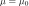
: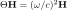
,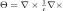
, Hermitian under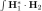
. Real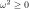
, orthogonal modes — a quantum-mechanics-like eigenproblem.- Bloch: periodic
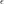
→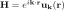
(Bloch's theorem). - Scale invariance: scaling all lengths by
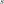
scales frequencies by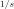
: band diagrams use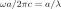
. - Variational principle: low bands concentrate energy in high- regions, upper bands in low- ones; the energy difference opens the gap (1D: the Bragg stopband, gap/midgap
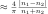
for quarter-wave layers).
Defects
 up to ~100); removing a few holes (L3, H1 cavities) gives
up to ~100); removing a few holes (L3, H1 cavities) gives  with
with Worked example
Si slab with triangular lattice of air holes,
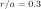
: TE gap roughly at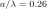
–0.33. For a gap centred at 1550 nm choose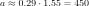
nm, holes of 270 nm diameter. A 1D Bragg stack Si/SiO (3.48/1.44): relative gap
(3.48/1.44): relative gap 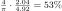
.Engineering applications
Photonic-crystal fibres (endlessly single-mode, hollow core), PhC lasers and nanocavities, slow-light modulators and sensors, structural colour (butterfly wings, opals), VCSEL mirrors (1D).
Pitfall
A 2D slab crystal has no true complete gap: modes above the light line leak vertically. Designs must keep the operating band below the light line.